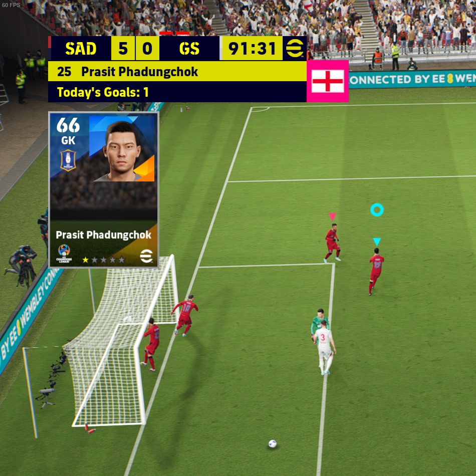
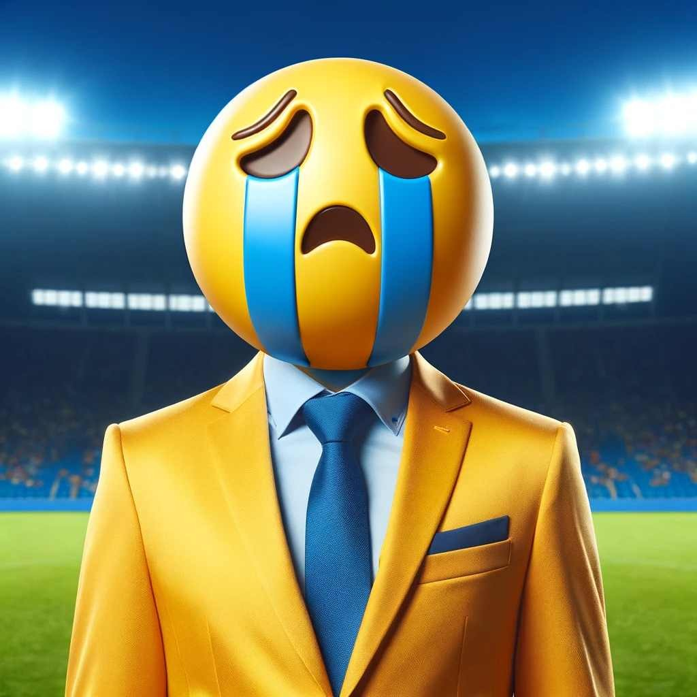
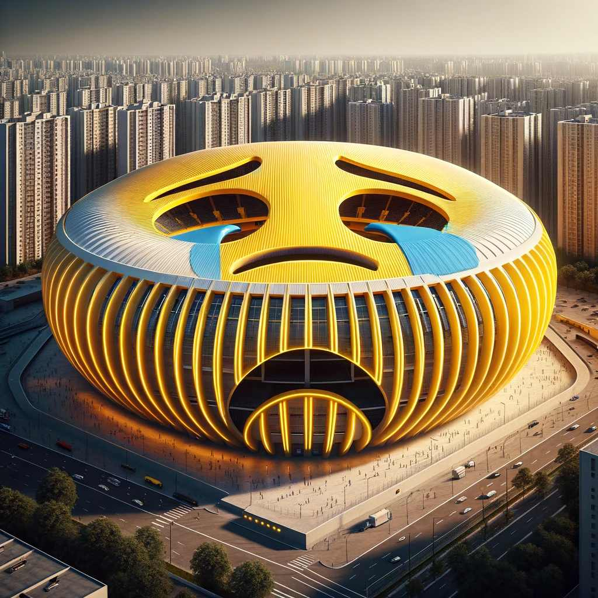

Welcome to Sadboys FC
A cry face for you, a cry face for me.
We are the Sadboys, the Sadboys FC.
News

Feed the Prasit, he will score
To home fans' delight our very own Sadboy #1, Prasit Phadungchok, was deployed as a centre forward in our recent thumping fixture against GS, netting once.

Saddy O'Dear appointed as the new club manny
Fans react as former Irish international and lifelong Sadboys fan Saddy O'Dear was appointed as first team coach on Wednesday.

New rennos finished for the Sadman & Sons Arena
After six months of construction work the Sadman & Sons arena has finally had its rennos done.